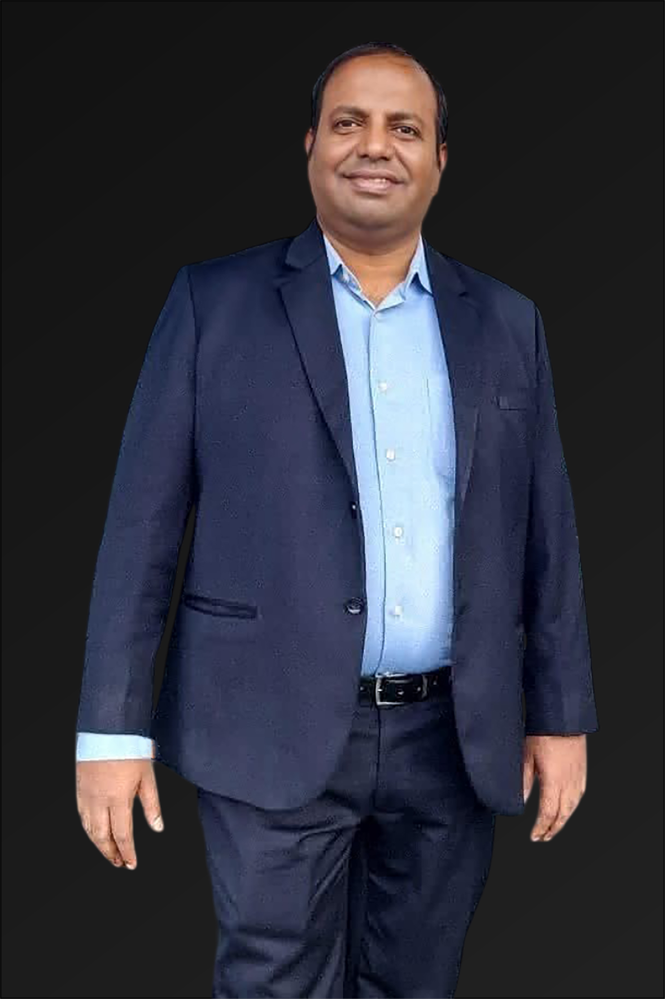

The Chief Operations Officer
As the Chief Operating Officer (COO) of NeuroPi, I bring a wealth of experience spanning 30 years across diverse industries, including operations management, infrastructure engineering, education, and entrepreneurship. My journey has been defined by a strong track record of leading world-class operations and managing complex, large-scale projects, with a particular focus on port and Integrated Transportation Planning in Oman, and now the next-generation human performance technology sector with NeuroPi.
Before joining NeuroPi, I held senior leadership roles, including Head of Operations at two of Oman's most prestigious ports, Salalah and Sohar, where I successfully managed day-to-day operations, logistics, and infrastructure development — significantly improving efficiency, safety, and operational excellence. My foundation as an Infrastructure Engineer and my passion for innovation and education have equipped me with a unique set of skills to drive operational success in the tech world, where precision and quality are paramount.
Global Infrastructure Management: 20 years of extensive international experience in managing prestigious and challenging multi-million-dollar infrastructure and port projects like Sohar and Salalah, successfully overseeing complex systems and ensuring seamless large-scale operations in high-pressure environments.
Education & Entrepreneurship: With a strong passion for learning, and as CEO of My School ITALY, I have also contributed significantly to the education sector, providing strategic insights on how technology can be applied to optimize performance, engagement, and growth. I have also led entrepreneurial ventures that have helped bridge the gap between engineering and human performance optimization. Additionally, I have been instrumental in constructing and managing shopping complexes for my family in my hometown.
Strategic Vision: My focus on efficiency, scalability, and sustainability has allowed me to deliver results in both public infrastructure and cutting-edge technology platforms like NeuroPi, ensuring that operations run smoothly and that we continue to evolve and grow in line with our mission to unlock human potential.
Over my career, I have earned more than 100 prestigious awards and accolades, including: